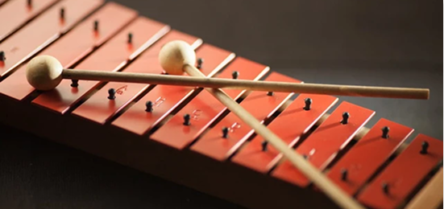
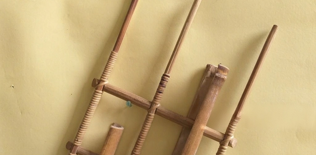
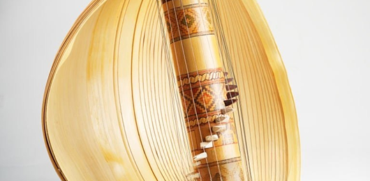
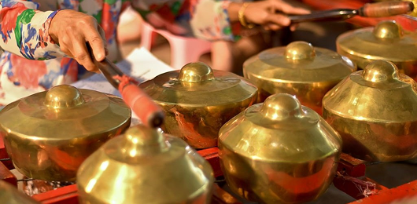

Pilih instrumen favoritmu dan ikuti pembelajaran lengkap dengan notasi,
audio, dan video interaktif. Dibuat dengan desain elegan agar belajar
jadi pengalaman menyenangkan.

Kolintang
Pelajari harmoni kolintang, mulai dari laras, pola ketukan, hingga
kolaborasi antar-instrumen.
Angklung
Pelajari teknik goyang angklung, harmoni ansambel, dan repertoar
angklung modern dengan cara yang menyenangkan.


Sasando
Kuasai teknik petikan dan irama khas dari alat musik petik
tradisional Sasando yang unik.
Gamelan
Pelajari harmoni gamelan Jawa, mulai dari laras, pola tabuhan,
hingga ansambel instrumen.

Jadilah Bagian dari Generasi Pelestari
Tingkatkan kemampuanmu dan sebarkan semangat musik Nusantara.